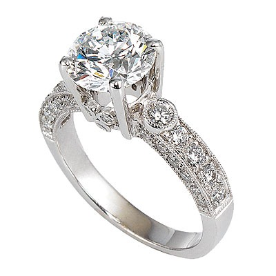

Mercury
^^^^^^
Movie buff Tony Chou (Tony Zhou) published in his Vimeo video review with an analysis of the demonstration set of SMS and other text messages in modern cinema.
Science in the media always seems to be very one-sided. News media chasing sensations and much has been written about the research, "British scientists" and the low probability, but high-profile discoveries, which may take place in the future, not only paying attention to really important things. In addition, the Internet, magazines and television are often held discussions on
Science in the media always seems to be very one-sided. News media chasing sensations and much has been written about the research, "British scientists" and the low probability, but high-profile discoveries, which may take place in the future, not only paying attention to really important things. In addition, the Internet, magazines and television are often held discussions on
^^^^^^
You can ask your question by filling in the form
Callback
You can choose your size, decoration material (silver, gold)
You can write a variety of phrases, change shape, and even adjust the polishing.
You can use a credit card, and other convenient for you.
On this site you can choose the most convenient way for delivery.
We beautifully pack and deliver your decoration in our signature box.
As credit cards, and other convenient for you.
^^^^^^
Movie buff Tony Chou (Tony Zhou) published in his Vimeo video review with an analysis of the demonstration set of SMS and other text messages in modern cinema.
You will not see our jewelry set rhinestones, huge rocks and massive detalley - we appreciate the simplicity.
All our decorations - handmade and each of them we put a piece of the soul and the long hours of hard work.
Do you and your friend will never be the same decorations - all our jewelery is unique.
From the outset, we are building a relationship of trust with our customers.
our jewelery
^^^^^^
As with any other phase of the project, this stage should also be assessed at all stages and in any way possible. The more you study this stage, the better you understand your users, the reasons for which they leave or stay, and this information will increase the number of the latter. Below you will find 21 tips for organizing user activation, which will help
As with any other phase of the project, this stage should also be assessed at all stages and in any way possible. The more you study this stage, the better you understand your users, the reasons for which they leave or stay, and this information will increase the number of the latter. Below you will find 21 tips for organizing user activation, which will help
^^^^^^
You can ask your question by filling in the form
Callback
When making such important decisions as the conclusion of the wage project, it is important to simultaneously run a number of conditions.
This is a Bank that we trust. Our history of working with Alfa-Bank has about 15 years. We have almost from the base
In 2010, we came to the conclusion that we need a payroll project. Naturally, we considered the offers of different banks
In 2010, we came to the conclusion that we need a payroll project. Naturally, we considered the offers of different banks
When making such important decisions as the conclusion of the wage project, it is important to simultaneously run a number of conditions.
This is a Bank that we trust. Our history of working with Alfa-Bank has about 15 years. We have almost from the base
our photoblog
^^^^^^
Like any other phase of the project, this phase should also be assessed at all stages and in any way. The more you study this stage, the better you understand your users, the reasons for which they leave or stay, and this information will allow to increase the number of the latter. Below you will find 21 Council for organizing activated users that will help
Like any other phase of the project, this phase should also be assessed at all stages and in any way. The more you study this stage, the better you understand your users, the reasons for which they leave or stay, and this information will allow to increase the number of the latter. Below you will find 21 Council for organizing activated users that will help